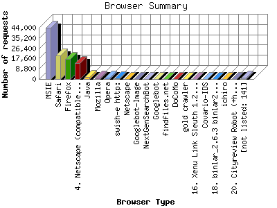

The Browser Summary identifies the most popular web browsers used to visit
this site.
Browsers are broken down by recognized categories such as
Netscape Navigator/Communicator, Microsoft Internet Explorer, WebTV, Opera
and the like. Within each category is also a subgroup by version number
such as 'MSIE 5.0' or 'Netscape 4.5'.
This report shows the first 20 results by number of requests. This report is sorted by number of requests.

| Browser Type | Number of requests | |
|---|---|---|
| 1. | MSIE | 43,741 |
| 2. | Safari | 20,321 |
| 3. | Firefox | 17,456 |
| 4. | Netscape (compatible) | 13,734 |
| 5. | Java | 2,016 |
| 6. | Mozilla | 1,305 |
| 7. | Opera | 908 |
| 8. | swish-e http: | 574 |
| 9. | Netscape | 247 |
| 10. | Googlebot-Image | 203 |
| 11. | NextGenSearchBot | 192 |
| 12. | Googlebot | 173 |
| 13. | findfiles.net | 159 |
| 14. | DoCoMo | 157 |
| 15. | gold crawler | 144 |
| 16. | Xenu Link Sleuth 1.2f | 138 |
| 17. | Covario-IDS | 104 |
| 18. | binlar_2.6.3 binlar2.6.3@unspecified.mail | 86 |
| 19. | ichiro | 79 |
| 20. | Cityreview Robot (+http: | 79 |
| [not listed: 141] | 1,436 | |
This report was generated on June 13, 2011 04:47.
Report time frame November 29, 2010 00:04 to June 12, 2011 23:50.
| Web statistics report produced by: analog 6.0 / Report Magic 2.21 |